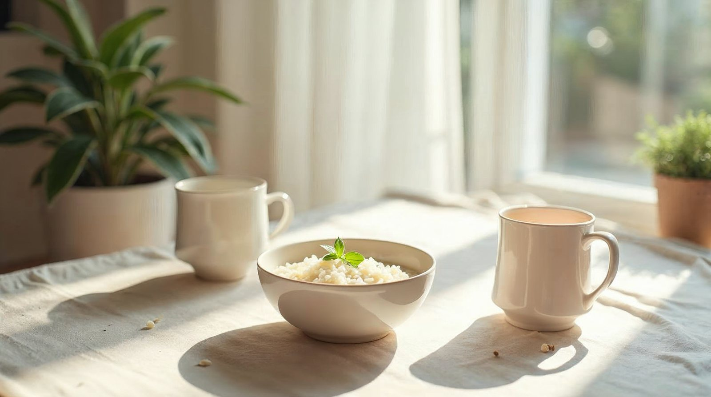
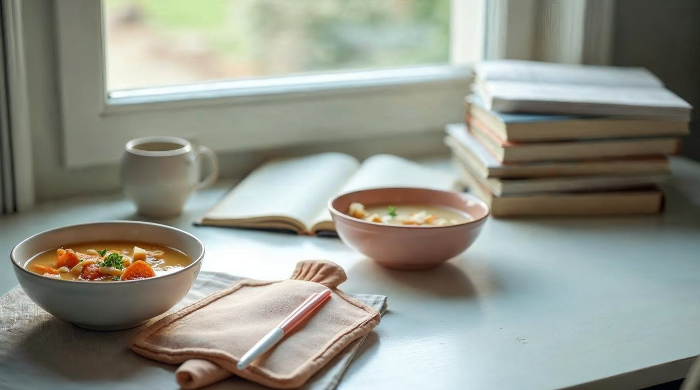
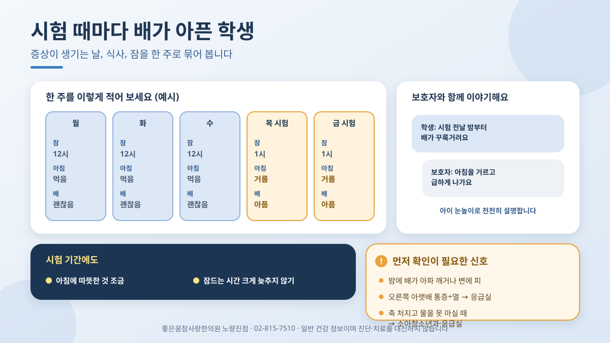

이종호 한의사 감수좋은꿈참사랑한의원 대표원장 (한의사 면허번호 19769)발행 2026-11-23 · 수정 2026-11-26
이 글의 차례
시험 전날 밤, 문제집을 펴 둔 책상에서 아이가 배를 감싸 쥐고 몇 번째 화장실을 다녀옵니다. 시험 기간마다 되풀이되는 이런 복통은 긴장과 잠 부족, 아침 거르기와 야식이 한꺼번에 겹친 경우가 많습니다. 그래서 저는 배가 아픈 때와 식사, 잠부터 여쭙고 먼저 확인해야 할 신호가 없는지도 살핍니다.
다음 날 아침은 더 바쁩니다. 교복 단추를 채우다 말고 다시 화장실로 들어가고, 식탁에 차려 둔 밥은 한 숟가락도 줄지 않은 채 현관문이 닫힙니다. 보호자는 걱정이 되면서도 한편으로는 시험 때문인가 싶어 마음이 복잡해지지요.
진료실에서 보호자분께 이런 말씀을 자주 듣습니다. 꾀병 같지는 않은데 시험만 끝나면 멀쩡하니 어떻게 받아들여야 할지 모르겠다고요. 옆에 앉은 학생의 얼굴에는 또 다른 마음이 보입니다. 아픈 건 진짜인데 아무도 제대로 믿어 주지 않는 것 같은 서운함이에요.
저는 두 분 말씀이 다 맞다고 생각합니다. 시험이 끝나면 가라앉는 것도 사실이고, 시험 기간에 배가 아픈 것도 진짜입니다. 몸과 마음을 함께 본다는 것은 증상을 마음 탓으로 돌린다는 뜻이 아닙니다. 긴장한 날, 잠을 못 잔 날 배가 더 크게 반응하는 그 흐름을 함께 보려는 것이지요.
왜 이런 불편이 생길 수 있나요
뇌와 장은 신경으로 쉼 없이 신호를 주고받습니다. 긴장하면 심장 박동과 소화를 함께 조절하는 자율신경이 한쪽으로 쏠리는 경우가 있는데, 배는 그 변화가 먼저 티 나는 곳 가운데 하나입니다.
장의 움직임이 빨라지면 배가 꾸르륵거리고 화장실이 급해집니다. 반대로 느려지면 더부룩하거나 며칠씩 변을 못 보기도 하고요. 한 학생에게서 둘이 번갈아 오는 일도 드물지 않습니다.
긴장이 길어지면 장이 작은 자극에도 크게 반응하는 경우가 있습니다. 평소에는 모르고 지나갈 꾸르륵거림이 조용한 시험 시간에는 유난히 크게 느껴지는 식이지요. 또 아프면 어쩌나 하는 걱정이 다시 배를 긴장시키기도 합니다.
여기에 시험 기간의 생활이 겹칩니다. 밤늦게까지 공부하며 야식과 카페인을 먹으면 아침 배가 더 예민해지고, 늦게 자면 아침 입맛이 없어 빈속으로 등교하게 됩니다. 아침을 먹고 나면 장이 움직이기 시작하는 경우가 많은데, 그 시간을 건너뛰고 급하게 나서면 배가 불편한 느낌이 수업 중에 몰리기도 합니다.
잠도 빼놓을 수 없어요. 잠을 못 자면 같은 불편도 더 크게 느끼고, 긴장이 풀리지 않으면 소화도 무거워집니다. 하루 종일 앉아 있느라 몸을 움직이는 시간이 줄어드는 것도 장의 리듬을 둔하게 만들 수 있습니다.
배만 아픈 게 아니라 목과 어깨가 뻣뻣하고 머리가 무겁다는 학생도 많습니다. 오래 앉아 고개를 숙이고 있으면 목과 등이 굳기 쉽고, 긴장하면 어깨가 올라가고 숨이 얕아지기도 하지요. 그래서 배를 여쭙는 자리에서 목·어깨와 잠 이야기도 꺼냅니다.
다섯 가지가 한꺼번에 흔들리는 시기
저는 몸이 회복하는 바탕으로 다섯 가지를 봅니다. 잘 먹고, 잘 싸고, 잘 자고, 마음 편하고, 몸 따뜻하게. 시험 기간의 학생은 이 다섯 가지가 한꺼번에 흔들리기 쉽습니다. 끼니는 들쭉날쭉하고, 화장실은 불편하고, 잠은 모자라고, 마음은 쫓기고, 손에는 찬 음료가 들려 있지요.
한의학에서는 오래전부터 생각과 걱정이 지나치면 소화를 맡은 비위(脾胃)가 지친다고 설명해 왔습니다. 그래서 학생의 배를 볼 때도 배만 따로 떼어 보지 않고 소화와 잠, 긴장, 몸의 온기를 함께 살핍니다.
찬 음료를 마시거나 배가 차가워지면 설사를 하는 학생이 있어, 찬 것을 먹은 날 배가 어땠는지도 여쭙지요. 다만 차갑게 느끼는 이유는 사람마다 달라서, 덮어놓고 데우기보다 그 학생에게 맞는 쪽을 찾습니다.
시험이 끝나면 가라앉는 배, 무엇을 말해 줄까요
시험이 끝나는 날 오후부터 배가 조용해지고, 주말이나 방학에는 거의 아프지 않다는 학생이 많습니다. 이런 흐름은 배앓이가 긴장과 생활 리듬에 이어져 있을 가능성을 보여 주는 단서가 됩니다. 다만 단서일 뿐, 다른 원인이 없다는 뜻은 아니에요.
그래서 저는 흐름이 깨지는 지점을 눈여겨봅니다. 시험이 끝났는데도, 방학인데도 배가 계속 아프다면 긴장만으로는 설명하기 어려워 다른 원인을 확인해 봐야 합니다. 이런 배앓이가 몇 달씩 이어지면 과민성 장이라는 말을 듣기도 하는데, 그 이름 역시 다른 원인을 먼저 살핀 뒤에 붙습니다.
내과나 소아청소년과에서 받은 검사가 있다면 결과지를 가져와 주세요. 검사에서 큰 이상이 없었다면, 그다음은 배가 아픈 날과 괜찮은 날이 무엇이 다른지 나란히 놓고 보는 일입니다.
먼저 이렇게 여쭙니다
- 배가 아픈 것이 시험이나 발표 전에 특히 심한가요?
- 아침밥은 먹나요? 야식은 자주 먹나요?
- 잠은 몇 시에 자고 몇 시간 정도 자나요?
- 배가 아프면 설사 쪽인가요, 더부룩하거나 변비 쪽인가요?
- 커피나 에너지 음료는 하루에 얼마나 마시나요?
- 배가 아파서 학교에 못 간 적이 있나요?
- 시험이 끝나면 배 아픈 것이 금방 나아지나요?
질문은 학생에게 먼저 드립니다. 배가 어디가 어떻게 아픈지는 그 배로 하루를 보낸 본인이 가장 잘 알기 때문입니다. 보호자분의 이야기는 이어서 듣습니다. 집에서 본 아침 모습이나 식사 속도, 늦은 간식 같은 것은 보호자분이 더 잘 아실 때가 많으니까요.
두 분의 이야기가 조금씩 다를 때도 있습니다. 보호자는 아침을 먹고 갔다고 기억하는데, 학생은 우유 한 모금이 전부였다고 말하는 식이지요. 저는 그 차이를 따지려는 게 아니라 둘을 나란히 놓고 하루를 다시 그려 보려는 것입니다. 학생이 "그건 아닌데요" 하면 거기서부터 다시 듣습니다.
제가 꼭 나눠서 여쭙는 질문도 있습니다. 시험 전날 잠을 설쳐서 아침에 배가 아픈 것인지, 배가 아파서 잠을 설치는 것인지입니다. 겉보기에는 비슷한 두 문장이지만 살피는 방향이 다릅니다. 마음 이야기는 편한 만큼만 해도 괜찮아요.
예를 들면 이런 경우입니다
예를 들어 학원이 늦게 끝나 밤 열한 시 넘어 야식을 먹고 새벽 한두 시에 잠드는 경우라면, 아침에 입맛이 없어 빈속으로 집을 나서기 쉽습니다. 이럴 때는 아침을 억지로 먹이기보다 마지막 식사 시각과 잠드는 시각부터 같이 정리해 봅니다.
예를 들어 시험 시간에 화장실이 급해질까 봐 아침도 물도 거르고 가는 경우도 있습니다. 빈속에 긴장까지 더해지면 배가 오히려 더 예민해질 수 있어요. 조금 일찍 일어나 따뜻한 것을 몇 숟가락 먹고, 집에서 화장실에 다녀올 여유부터 만들어 보자고 이야기합니다.
예를 들어 보호자와 학생이 둘 다 소화가 약하고 밥을 빨리 먹는 편이라면, 같은 식탁의 식사 속도와 늦은 간식 습관부터 함께 이야기합니다. 아이에게만 바꾸라고 하기보다 식탁 전체가 조금 천천히 가는 편이 오래 지키기 쉽습니다.
아침을 거르고 등교하는 문제는 중고등학생 아이가 아침을 거르고 등교할 때는 어떻게 살피나요?에 따로 정리해 두었습니다.

스스로 점검해 보세요
- 시험이나 발표가 있는 주에 배가 더 자주 아프다
- 주말이나 방학에는 배가 비교적 조용하다
- 아침을 거르거나 빈속에 커피·에너지 음료를 마시는 날이 많다
- 밤늦게 야식을 먹고 바로 잠자리에 든다
- 자정을 넘겨 잠드는 날이 일주일에 사흘 이상이다
- 시험 시간에 화장실이 걱정돼 물을 덜 마신다
- 긴장하면 어깨가 올라가고 숨이 얕아진다
여러 개에 해당한다면 긴장과 생활 리듬이 배와 이어져 있을 가능성이 있습니다. 학생이 직접 표시해 오면 더 좋고, 표시한 목록을 진료 때 그대로 보여 주셔도 됩니다.
일상에서 먼저 해 볼 수 있는 것
- 아침에 따뜻한 음식이나 물 조금이라도 먹기
- 시험 기간에도 잠드는 시간을 크게 늦추지 않기
- 에너지 음료와 커피 줄이기
- 야식은 되도록 줄이고, 먹더라도 잠들기 직전은 피하기
- 배가 아플 때 배를 따뜻하게 하고 천천히 숨 쉬기
- 시험 기간에도 가벼운 산책이나 스트레칭으로 몸 풀기
한꺼번에 다 하려고 하지 않아도 됩니다. 저는 큰 목표보다 해낼 수 있는 만큼을 함께 정하는 편이에요. 하나만 골라 일주일 해 보고, 못 지킨 날이 있어도 스스로를 탓하지 말고 다음 날 다시 하면 됩니다.
끼니 시간을 날마다 비슷하게 맞추면 몸이 하루의 흐름을 기억하기 쉽습니다. 시험 기간 주말에 몰아서 늦잠을 자기보다, 일어나는 시각을 평일과 1시간 안쪽으로 맞춰 보세요. 잠자리에 들기 30분 전에는 휴대폰을 내려놓아 보시고요.
배가 아플 때는 따뜻한 물을 몇 모금 마시고, 편하게 앉아 숨을 조금 길게 내쉬어 보세요. 한 번에 3분쯤이면 충분합니다. 숨을 억지로 끌다가 어지러우면 바로 멈추세요.
공부하다가 한 시간에 한 번은 일어나 허리를 펴 주세요. 저녁에는 옆 사람과 이야기를 나눌 수 있을 만큼의 속도로 20~30분 걸어도 좋습니다. 잠들기 1~2시간 전 따뜻한 물로 충분히 샤워하거나 발을 10~15분 담그는 것도 하루의 긴장을 내려놓는 신호가 됩니다.
시험 당일 아침
시험 날 아침에는 평소 먹던 부드럽고 따뜻한 음식을 조금 먹어 보세요. 처음 먹는 음식이나 에너지 음료는 그날만큼은 피해 주세요.
집을 나서기 전에 화장실에 앉아 볼 여유를 10분쯤 두세요. 시험 보는 건물의 화장실 위치를 미리 알아 두는 것만으로도 덜 불안해하는 학생이 많습니다.
시험이 끝난 날
시험이 끝난 날 저녁, 그동안 참았던 음식을 한꺼번에 몰아 먹고 늦게까지 깨어 있다가 배가 다시 탈이 나는 학생도 있습니다. 끝난 뒤 며칠은 끼니와 잠을 천천히 원래 리듬으로 돌려놓아 주세요. 다음 시험 기간의 배는 그 며칠에서부터 준비됩니다.
보호자께 드리는 부탁
아침을 안 먹고 나가는 아이를 보면 한 숟가락이라도 먹이고 싶은 게 보호자 마음입니다. 그래도 아침 식탁에서 실랑이가 길어지면 그 긴장이 다시 배로 가기도 합니다. 다그치기보다 전날 밤 야식과 잠드는 시각을 같이 정리해 보는 편이 오래가요.
배가 아프다고 할 때 꾀병이냐고 묻기보다, 어디가 어떻게 아픈지 같이 적어 보자고 해 주세요. 그 한마디가 아이에게는 믿어 준다는 뜻으로 들립니다.
배앓이와 함께 짜증이 부쩍 늘고 방에만 있으려 하거나 학교 가기를 많이 힘들어한다면, 배만이 아니라 마음이 얼마나 지쳤는지도 살펴야 합니다. 필요하면 전문적인 심리 지원도 안내해 드립니다.

한의원에서 함께 살필 수 있는 경우
- 시험 때마다 배가 아픈 학생의 경우 소화, 잠, 긴장을 함께 살핍니다.
- 쉽게 지치고 집중이 어려운 경우 생활 리듬 전체를 함께 살핍니다.
- 보호자와 학생 이야기를 모두 들으며 일상을 함께 살핍니다.
- 검사에서 큰 이상이 없다고 들었는데도 시험 때마다 배앓이가 되풀이되는 경우 생활 기록을 함께 짚어 봅니다.
학생은 보호자와 함께 오시길 권합니다. 처음 오시면 모든 분께 그렇듯 맥부터 짚습니다. 학교나 학원에서 서둘러 왔다면 잠시 숨을 고른 뒤에 짚어요. 걸어온 직후나 식사 직후에는 맥이 달라지기 때문입니다.
손끝이 아닌 손가락 면으로 가볍게, 양손을 비교하며 짚습니다. 맥은 나이와 체격, 하는 일에 따라 정상의 폭이 다릅니다. 제가 자주 드리는 말씀이 있습니다. "사람마다 맥에 좋고 나쁨이 있는 게 아닙니다. 얼굴 생김새처럼 다 다를 뿐입니다."
맥을 짚는 동안에도 이야기는 이어집니다. 혀를 한번 보여 달라고 하고, 식사는 어떤지, 속은 편한지, 대변과 잠은 어떤지 여쭙습니다. 필요하다고 판단될 때는 배를 살피는 복진을 더하고, 가져온 검사 결과지와 먹고 있는 약도 확인합니다.
진맥을 두고 제가 드리는 말이 하나 더 있습니다. "진료실에서는 둘이 아니라 셋이 이야기합니다. 환자분, 환자분의 맥, 그리고 저." 학생이 보호자와 함께 오면 넷이 이야기하는 셈이지요.
맥 하나로 결론을 내리지는 않습니다. 이야기와 진찰을 모아 침이나 한약이 필요한지, 생활부터 정리해 볼지 학생·보호자와 상의해 정하고, 내과적인 확인이 필요해 보이면 의료기관 진료를 먼저 안내합니다.
시험 일정을 알려 주시면 그 기간에 무리 없이 지킬 수 있는 생활 계획을 같이 세워 봅니다. 수험생 상담에서 나누는 이야기는 수험생 상담에서는 어떤 이야기를 나누나요?에도 적어 두었습니다.
다시 오시면 맥을 다시 짚고, 지난번에 정한 것부터 이어서 여쭙습니다. 처음 오셨을 때 학생도 저도 몰랐던 것이 두 번째 만남에서 드러날 때가 있거든요.
얼굴을 기억하는 학생에게는 지난번에 들은 이야기로 먼저 말을 꺼냅니다. 예를 들어 지난번에 새벽 두 시쯤 잔다고 했다면 이번 시험 때는 어땠는지, 아침을 몇 숟가락이라도 먹어 봤는지부터요. 지키기 어려웠던 사정까지 들어야 다음 걸음을 함께 정할 수 있습니다.
저는 지역 초·중학교의 교의로도 아이들의 건강을 살피고 있어, 시험 기간 아이들의 하루가 남의 일 같지 않습니다.
이렇게 기록해 오시면 상담이 쉬워집니다
- 배가 아팠던 날짜와 시험·발표 일정
- 그 주의 잠든 시간과 아침·야식 여부
- 설사나 변비 등 변의 변화
- 배가 아픈 자리와 화장실에 다녀온 뒤 가라앉는지
- 먹고 있는 약이나 영양제
- 시험 전날 먹은 음식과 마신 카페인 음료
기록은 학생이 휴대폰 메모에 한 줄씩 남기는 것으로 충분합니다. 보호자가 본 것과 학생이 느낀 것을 따로 적어 오시면 하루를 다시 그려 보기가 훨씬 쉬워요.
배가 아픈 자리와 시간을 적는 방법은 아이가 배가 아프다고 할 때 위치와 시간은 어떻게 적어 두면 좋을까요?를 참고해 주세요.
다음에 오시면 이것부터 여쭙겠습니다. 지난 시험 주에 몇 시에 잠들었는지, 그리고 아침에 무엇이든 몇 숟가락 먹고 나선 날이 있었는지요. 하루라도 있었다면 저는 그 이야기부터 듣고 싶습니다.
좋은꿈참사랑한의원이 소중하게 여기는 말은 '건강한 리듬, 행복한 기억'입니다. 시험은 끝이 있지만, 그 시절의 기억이 배앓이로만 남지 않았으면 합니다. 시험을 버텨 내느라 애쓴 배와 마음을, 시험이 끝난 뒤에도 조금 더 다정하게 돌봐 주세요.
이런 증상은 먼저 확인이 필요합니다
- 밤에 배가 아파 잠에서 깨거나, 변에 피가 섞이거나, 체중이 이유 없이 줄 때
- 마음이 많이 힘들어 스스로를 해칠 생각이 들면 ☎ 109로 바로 연락하세요
이런 신호가 있으면 한의원보다 가까운 병원이나 응급실을 먼저 찾으세요.

여쭙는 것
- 배가 아픈 것이 시험이나 발표 전에 특히 심한가요?
- 아침밥은 먹나요? 야식은 자주 먹나요?
- 잠은 몇 시에 자고 몇 시간 정도 자나요?
생활에서 해 볼 것
- 아침에 따뜻한 음식이나 물 조금이라도 먹기
- 시험 기간에도 잠드는 시간을 크게 늦추지 않기
- 에너지 음료와 커피 줄이기
한의원에서 함께 살필 것
- 시험 때마다 배가 아픈 학생의 경우 소화, 잠, 긴장을 함께 살핍니다.
- 쉽게 지치고 집중이 어려운 경우 생활 리듬 전체를 함께 살핍니다.
- 보호자와 학생 이야기를 모두 들으며 일상을 함께 살핍니다.
먼저 확인이 필요한 신호
- 밤에 배가 아파 잠에서 깨거나, 변에 피가 섞이거나, 체중이 이유 없이 줄 때
- 마음이 많이 힘들어 스스로를 해칠 생각이 들면 109로 바로 연락하세요
한눈에 보는 표
| 구분 | 핵심 |
|---|---|
| 여쭙는 것 | 배가 아픈 것이 시험이나 발표 전에 특히 심한가요? 아침밥은 먹나요? 야식은 자주 먹나요? |
| 생활에서 해 볼 것 | 아침에 따뜻한 음식이나 물 조금이라도 먹기 시험 기간에도 잠드는 시간을 크게 늦추지 않기 |
| 한의원에서 함께 살필 것 | 시험 때마다 배가 아픈 학생의 경우 소화, 잠, 긴장을 함께 살핍니다. 쉽게 지치고 집중이 어려운 경우 생활 리듬 전체를 함께 살핍니다. |
| 먼저 확인이 필요한 신호 | 밤에 배가 아파 잠에서 깨거나, 변에 피가 섞이거나, 체중이 이유 없이 줄 때 마음이 많이 힘들어 스스로를 해칠 생각이 들면 109로 바로 연락하세요 |
자주 묻는 질문
마음 때문에 배가 아픈 건가요?
긴장이 배의 불편과 이어지는 경우가 있지만, 마음 탓으로 돌리려는 것은 아닙니다. 배가 아픈 것도 진짜이고, 다른 원인이 없는지도 살핍니다.
학생 혼자 와도 되나요?
미성년자는 보호자와 함께 오시는 것을 권합니다. 함께 오기 어려운 사정이 있다면 방문 전 전화(02-815-7510)로 먼저 문의해 주세요.
시험 기간에 맞춰 진료받아도 되나요?
시험 일정을 알려 주시면 그 기간에 맞춰 생활 계획을 함께 세웁니다. 평일 09:30~20:00(점심 13:00~14:00), 토·일·공휴일 09:30~15:00 진료하며, 원장별 진료 일정은 방문 전 전화로 확인해 주세요.
시험을 앞두고 보약이나 공진단을 먹여도 될까요?
공진단과 기억력에 관한 연구는 세포와 동물 실험에서 나온 것이라, 공부에 도움이 된다고 말씀드릴 근거는 아직 없습니다. 아이가 지쳐 있다면 잠과 식사, 긴장 상태부터 살펴보고, 약은 아이의 나이와 몸 상태를 진찰한 뒤 상의합니다.
좋은꿈참사랑한의원은 재진 때 지난번 이야기부터 이어서 여쭙니다. 진료시간과 예약은 오시는 길에서 확인하세요.
어디서 상담받을 수 있나요?
좋은꿈참사랑한의원은 서울 동작구 만양로2길 2 신성빌딩 3층·5층(서울 동작구 상도동, 7호선 상도역 3번 출구 근처)에 있습니다. 한의사 3명(이종호 대표원장, 조영기 수석진료원장, 정원영 진료원장)이 진료합니다. 진료시간은 평일 09:30~20:00(점심 13:00~14:00), 토·일·공휴일 09:30~15:00이며, 방문 전 전화로 확인을 권합니다. 예약은 네이버 예약, 카카오톡 상담, 전화 02-815-7510로 받습니다.
이 글은 일반적인 건강 정보이며 개인의 진단이나 치료를 대신하지 않습니다. 증상이 있거나 복용 중인 약이 있다면 진료를 통해 확인하세요. 치료 효과는 개인마다 다를 수 있습니다.
작성 기준: 일반적으로 알려져 있는 건강 정보를 참고해 정리했습니다(대표원장 감수). 증상 기록은 1~2주 동안 하루 1회, 비슷한 시간에 적어 오시면 지난 상태와 비교하기 쉽습니다.